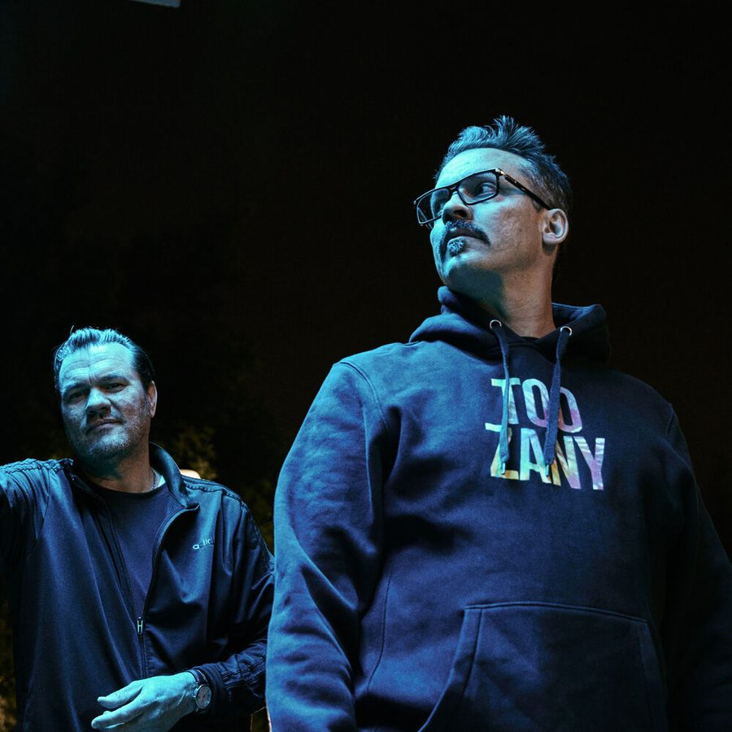

Atmosphere [Audio]: More optimistic than ever


Minneapolis duo Atmosphere have long been considered the flipside of the macho posturing and bravado that US rap is often guilty of; they’re poster boys for underground hip hop, if you will. The enduring partnership of producer Ant and lyricist Slug has delivered acclaimed six studio albums without a single mention of bling, and their music is laden with the sort of introspective observations that go straight to the dark heart of everyday life; the part we try to brush over and ignore.
However, Slug takes serious issue with any claim that their latest, and arguably most successful effort When Life Gives You Lemons, You Paint That Shit Gold, is an album that could be defined as ‘dark’. The blacker corners of the soul are definitely places Atmosphere have ventured in the past, but Slug insists the 2008 album is their most optimistic effort yet. “This is the first record that me and Ant have made were there was any resolution offered at the end of these complaints,” he laughs. “In the past, a lot of my records have just been these streams of complaints or me pointing at something saying this is fucked up, I’m fucked up or you’re fucked up. While this is the first time I’ve ever been able to offer any resolution,” Slug told ITM.
“So I do see it as our most optimistic record, both musically and lyrically.”
You’ll have a chance to see just how positive they are when Atmosphere reach Australia to play on the enviable lineup of the Days Like This festival as well as the Falls Festivals in Victoria and Tasmania and Southbound in WA. ITM’s Angus Paterson discovers the poster boys of underground hip hop ain’t so angry after all…
Catch Atmosphere offering a resolution at the following shows…
Tues 30th Dec – The Falls Festival, Victoria
Wed 31st Dec – The Falls Festival, Tasmania
Thur 1st Jan – Groove On New Years Day, Adelaide
Sat 3rd Jan – Southbound Festival, Western Australia
Sun 4th Jan – Days Like This, Sydney
Thur 8th Jan – Corner Hotel, Melbourne
Check out ITM’s Festival Pages for more news, features, clips and DJ mixes that you could possibly ever hope for as the New Year period draws near!